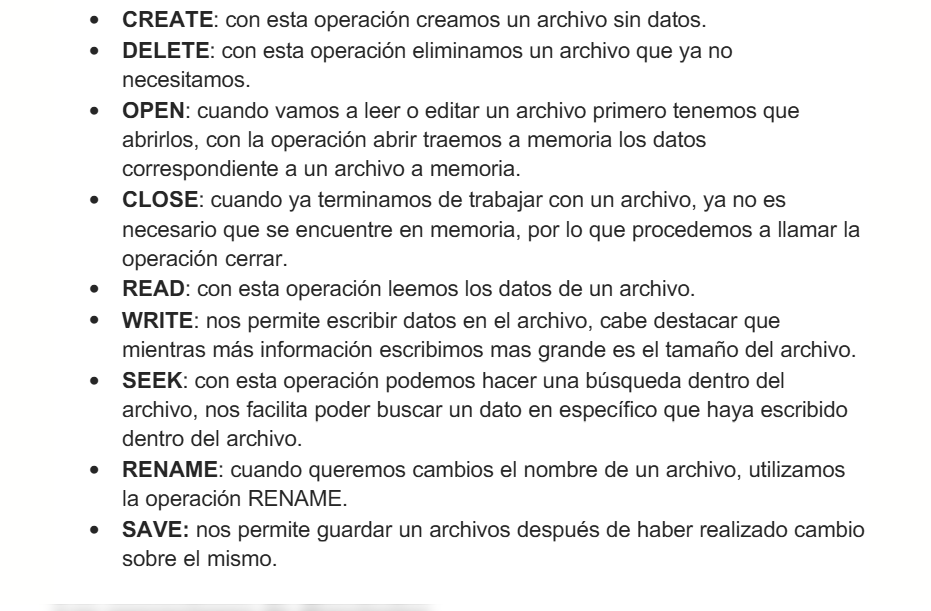

Operaciones con archivos y directorios
Objetivo: Desarrollar en los estudiantes la capacidad de organizar, administrar y manipular archivos y directorios dentro de distintos sistemas operativos, aplicando comandos básicos y herramientas digitales que les permitan mantener una estructura ordenada y funcional de la información.
Los estudiantes explorarán cómo se almacenan y estructuran los datos en un sistema operativo. Aprenderán a crear, mover, copiar y eliminar archivos y carpetas, comprendiendo la lógica de la jerarquía de directorios, utilizando los comandos básicos (Windows y Linux) para practicar la gestión de directorios de forma autónoma.
OPERACIONES CON ARCHIVOS: el término carpeta se utiliza como sinónimo de directorio.
Las operaciones mas comunes con directorios son:

Los directorios juegan un papel muy importante en los servicios de archivos y directorios:
Create
Delete
Opendir
Closedir
Readdir
Rename
Link
Unlink